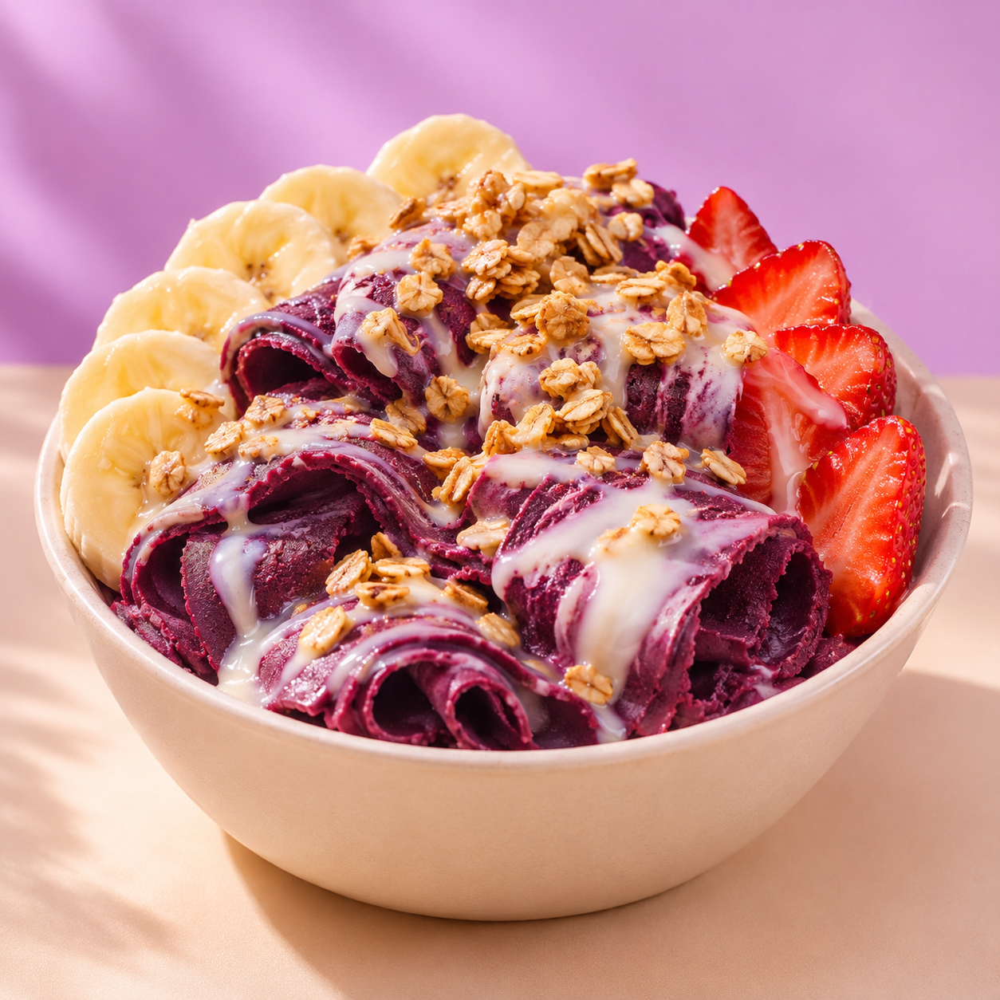

uma década10 anosfeito com amor
Uma década de encontros gostosos A nossa história
De colher em colher,
viramos parte da sua história.
Há 10 anos, a Loka do Açaí acredita que sabor bom fica ainda melhor quando é compartilhado. A gente cresce junto com cada cliente, cada comemoração e cada nova combinação.
Acompanhe a gente